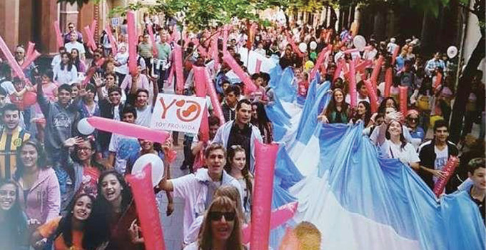
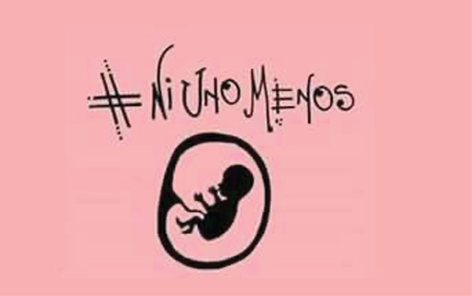

¿Cómo fue el origen del colectivo Con Mis Hijos no te Metas en la Argentina? ¿Qué ideas, valores y causas defienden y cómo lo hacen? En primer lugar, se presentará el movimiento CMHNTM desde sus orígenes en Perú hasta su desembarco en la Argentina. Luego, se reponen sus atributos como movimiento social: la estructura organizativa, los principales referentes, la red de actores aliados, su mito fundacional, su causa y su propuesta. Por último, se analizará el debate parlamentario por la legalización del aborto en el año 2018, como una coyuntura crítica para la reorganización del movimiento provida argentino. Cabe aclarar que, respecto de los actores aliados, se expone brevemente la trayectoria de vida de aquellos que tienen mayor vínculo con CMHNTM, sin pretensión de agotar el amplio espectro de actores provida de la escena política argentina.
En 2006, un capellán de la Iglesia Bautista Independiente con cuarenta años de experiencia, Néstor Mercado, llamó a manifestarse frente a la legislatura porteña pero solo participaron dos personas: él y una ciudadana estadounidense, Edie Owens. El motivo era el debate de la Ley de Educación Sexual Integral1 en la Ciudad Autónoma de Buenos Aires (CABA). Esta, es considerada la primera marcha contra la educación con ideología de género. El interés de Mercado por la temática se había despertado años antes trabajando en un foro de seguridad local:
[Y]o trabajaba en el foro de seguridad de mi ciudad [Don Torcuato, provincia de Buenos Aires], y veíamos que había una gran proliferación de violencia juvenil, atípica, o sea, violación de abuelas, matanza de viejos y empecé a darme cuenta de que esto era una suerte de comportamiento, de mala conducta, estaba apareciendo una nueva persona, un nuevo agente que no tenía reglas morales, que no tenía códigos, que no tenía nada. Y en esa búsqueda con los vecinos del barrio, del tema de seguridad, nos empezamos a dar cuenta que el problema era la falta de valores. Indagando sobre la falta de valores empecé a ir descubriendo que la crisis familiar que se estaba motorizando desde lugares de poder, desde la educación y otros lados, era la que estaba promoviendo un nuevo sujeto, que era el chico violento, el chico asesino, el chico drogadicto, un desastre. Ahí desemboco en comprender que la educación sexual y la ideología de género son un arma de ingeniería social, un arma de la geopolítica para desarmar los países que se basan en la familia que es la célula básica de la sociedad, que es el gran organizador social. Si rompemos la familia tenemos chicos con mala conducta, delincuencia, suicidios, malos papás, malas mamás. Se descompone el país todo (Néstor Mercado en CMHNTM, 9/4/2019).
En 2017 en el marco de una Conferencia Internacional en Perú, conoció a Christian Rosas,2 un joven politólogo egresado de la universidad norteamericana Liberty University,3 quien junto a Beatriz Mejía, la abogada neopentecostal que alguna vez intentó ser candidata a la presidencia del Perú, entre noviembre de 2016 y marzo de 2017 habían lanzado una fuerte campaña en reacción al nuevo Currículo Nacional de Educación Básica Regular (Zelada Tevez, 2017; Motta y Amat y León, 2018; Meneses, 2019). Pocos meses después de la marcha contra la violencia de género #NiUnaMenos,4 y durante varios meses, las calles, avenidas y carreteras en diversas ciudades del país se cubrieron de gigantografías y cartelería publicitaria con el lema “Con Mis Hijos no te Metas”. Las movilizaciones provocaron la destitución de dos ministros de Educación, el ministro Jaime Saavedra y la ministra de Marilú Martens, debido a su apoyo al nuevo Currículo; y un revés judicial de la Corte Superior que falló en contra de la Resolución ministerial que aprobaba el Currículo.
El lema de “Con Mis Hijos no te Metas” apareció por primera vez en el encuentro de movimientos cristianos y personalidades políticas peruanas y colombianas de noviembre de 2016, donde se firmó la llamada Declaración de Lima. Este documento “defiende la dignidad de la vida humana, la dignidad de la familia y la libertad de religión, y rechaza la ideología de género, que es contraria a los principios y valores que sustentan la sociedad” (InfoCatólica, 2016). Dicha declaración fue firmada por varios congresistas peruanos, entre ellos, Julio Rosas, padre de Christian.
Así alcanzaba visibilidad –a nivel nacional, y rápidamente a nivel internacional– un discurso que, desde los 90 venía gestándose en las altas esferas de la Iglesia Católica y en cristianas evangélicas, como oposición a las luchas feministas y de los movimientos LGBTIQ+.
El nuevo movimiento social en gestación contó con la influencia directa de legisladores nacionales, el activismo organizado de algunos sectores evangélicos y la producción escrita de la Conferencia Episcopal en favor de las causas antigénero, provida, profamilia (Motta y Amat y León, 2018). Ángelica Motta y Oscar Amat y León consideran que CMHNTM es un movimiento fundamentalista que proyecta una imagen de cruzada por la moralidad y decencia del país, y organiza su fundamentalismo en tres niveles: los operadores político-religiosos que no tienen una formación religiosa, sino que son profesionales con habilidades mediáticas para la incidencia pública; los evangélicos políticos, es decir, líderes religiosos que suelen negociar con los partidos políticos; y por último, líderes religiosos como pastores, ancianos u otras autoridades a cargo de iglesias locales con capacidad de movilización masiva gracias a su liderazgo comunitario y el alto grado de credibilidad que detentan (Motta y Amat y León, 2018: 109-115).
Otra impulsora en traer el movimiento a la Argentina fue Nancy García, una docente, católica y con larga trayectoria de militancia provida y profamilia, quien nutrida en la experiencia peruana decidió crear una página en Facebook con el fin de denunciar y dar a conocer la ideología de género. Su propósito fue evitar que dicha ideología avanzara en la Argentina y se instalara fuertemente como estaba sucediendo en el país andino. Para ello, comenzó a buscar referentes provida en todas las provincias para crear una red federal. Actualmente, Nancy es promotora de diferentes estrategias de visibilización del movimiento: intervenciones territoriales como volanteadas, pintadas, talleres, charlas, etc. Además, es coordinadora nacional del movimiento y referente en la provincia de Buenos Aires junto a otras dos coordinadoras nacionales, María Ángeles Márquez en Córdoba y Naomi Vera en Buenos Aires.
CMHNTM se expandió rápidamente por la región –lo que Motta y Amat y León llaman “el boom de la ideología de género”– con presencia en Ecuador, Bolivia, Panamá, Chile, Paraguay, Colombia, Uruguay, República Dominicana, Costa Rica, Argentina, y en otros 45 países según confirmó el fundador durante su visita al país (Christian Rosas en En los Medios no sale, 3/11/2018). Esta lucha internacional coordina en los diferentes continentes las “acciones sociales, políticas, culturales y comunicacionales para fortalecer lo evidente y obvio, lo real y veraz, frente a lo supuesto y ambiguo, lo ilusorio y falaz” (sitio oficial CMHNTM Argentina),5 es decir, para defender el derecho de los padres a educar a sus hijos de acuerdo con los valores y la moral de la familia y la vida y no de la denominada ideología de género.
Según Kevin Márquez, uno de los voceros de Perú, esta rápida expansión se debe a que se ha habilitado un “uso libre” de la etiqueta “CMHNTM”. Así, cualquier grupo en cualquier latitud que se sienta identificado con el colectivo y defienda las causas de “vida, familia y libertad” puede autodenominarse y manifestarse en nombre de Con Mis Hijos no te Metas. El activista relata una experiencia en la que una señora, sin relación previa con el movimiento, realizó un plantón frente al Parlamento Nacional (de Perú) portando un cartel rosa y celeste con el logo de CMHNTM, “no sabíamos quién era, pero si se identificaba y compartía la causa, bienvenida; el colectivo existe porque lo nombras y ¡listo!”, concluye la anécdota el entrevistado.6 Además relata que cada militante se suma al movimiento para “ofrecerle lo que tiene, lo que hace, su profesión, su oficio, etc.” (Márquez, 13/06/2020).7
El movimiento CMHNTM en la Argentina exhibe dos elementos identificados por Jaris Mujica (2007) y Cristina Vega (2020), la conservación de la vida y la familia de acuerdo con los valores morales tradicionales de reproducción del sistema patriarcal de opresión de las mujeres y discriminación de las diversidades de género. A ello, se suma la reactualización del discurso de la libertad por parte de Con Mis Hijos no te Metas.
La Teoría de la Movilización de Recursos (TMR) propone un modelo multifactorial de la formación de los movimientos sociales teniendo en cuenta los recursos, la organización, los contextos estratégicos y las alianzas, además del clásico factor del descontento (Jenkins, 1994). Uno de estos factores son los “empresarios políticos”. Estos son importantes dado que su organización depende de la accesibilidad a los recursos, cuadros de líderes y recursos estructurales que la faciliten. Por tanto, los empresarios políticos emergen como actores claves para aprovechar los recursos disponibles en favor de la organización. Por ejemplo, frente a una oportunidad política, los empresarios organizarán los recursos para movilizar el descontento y generar una situación de crisis favorable a su acción directa. También son los responsable de realizar una “captación diferencial” a partir de seleccionar a aquellos participantes que están más integrados en redes interpersonales; que son más activos en otros grupos de movilización; o que se muestran muy comprometidos con el cambio social y están estructuralmente disponibles para la participación.
En este caso, las tres coordinadoras y Néstor Mercado, principal referente del movimiento en su rol de vocero y representante oficial de CMHNTM en la Argentina, se convirtieron en los empresarios políticos que lideran “un equipo de mamás y papás”, así como de jóvenes –quienes ocupan un rol y un lugar cada vez más protagónico en la red de actores de CMHNTM– y son los responsables de tejer lazos institucionales y alianzas estratégicas. Por ejemplo, si bien se definen como grupos de padres autoconvocados, apartidarios y sin adhesión a ningún credo, es innegable que subyace una articulación plural y heterogénea entre el espacio evangélico y el católico, organizaciones sociales y asociaciones profesionales.
Así es que, aunque Christian Rosas afirma que “la mayoría somos un grupo independientemente religioso porque nuestro pedido no tiene nada que ver con la religión, nuestro pedido es de carácter ciudadano. Los que participan con mayor frecuencia son evangélicos, católicos, pero no tiene nada que ver con la religión” (Christian Rosas citado en Zelada Tevez, 2017), el movimiento que fundó es producto de esta alianza estratégica entre el evangelismo y el catolicismo ante un tema que los atraviesa como religión (Morán Faúndes, 2015; Semán, 2019; Caminotti y Tabbush, 2020; Vega, 2020). Una alianza estratégica que data desde los 90 y se consolida como permanente en el contexto definido como “batalla cultural” contra la ideología de género (Morán Faúndes, 2015; Biroli, 2020).
A los seguidores del papa se los ve en las marchas con imágenes cristianas, como vírgenes, cruces y rosarios gigantes, acompañados por sacerdotes y monjas. Mientras que los evangélicos ocupan los espacios visibles del movimiento: referentes, líderes, voceros propios y de otras organizaciones sociales provida. También ellos son los responsables de dar talleres o conferencias explicando, en lenguaje sencillo, las causas y propósitos del movimiento, así como sus compromisos ciudadanos y políticos. Al respecto, Mercado en una entrevista a Gustavo Contarelli indica:
Las iglesias evangélicas siempre han tenido actividad social. Pero tiene que estar asociada con la prédica, con la parte teológica. Nosotros los cristianos, creemos que el hombre necesita del encuentro con Dios […] Este cambio tiene impacto en lo social y económico. La iglesia ha superado la marginalidad creando campamentos, hogares, centros para tratamientos de adicciones. No estaba visibilizado su trabajo. Ahora con los problemas de la ideología de género, con los medios se ve todo. Hacia el interior el mensaje era que es pecado actuar en política. Y ahora venimos a descubrir que muchos de los líderes evangélicos están metidos en política. La iglesia debe estar separada de la política, pero sus miembros tienen una responsabilidad ciudadana (Contarelli, 2019).
A continuación, se profundizará en los diferentes actores de la red de aliados de CMHNTM. Este repaso por las organizaciones que mayor vínculo mantienen con el movimiento estudiado, permite divisar las formas en que religiones, actores nacionales y transnacionales, fuerzas políticas y de la sociedad civil, discursos, construcciones simbólicas y repertorios de acción atraviesan al movimiento conservador provida argentino. Luego, se adentrará en el movimiento social CMHNTM: cómo define su causa y al contexto en el que inscribe sus estrategias de acción e incidencia política.
La primera aparición de CMHNTM en las calles fue durante el debate por el proyecto de interrupción voluntaria del embarazo (IVE) en junio y agosto de 2018. En particular, el resultado adverso en la Cámara de Diputados el 14 de Junio fue un punto de quiebre para la organización. “La lección del 2018, construido sobre mentiras nos demanda mayor compromiso como argentinos”, sostuvo Mercado al reafirmar la necesidad de organización y movilización para evitar que el aborto fuera ley en la Cámara Alta. Con este objetivo, se organizó la “Gran Marcha provida” al Obelisco el 4 de agosto y al día siguiente en las provincias, pocos días antes de la votación que definiría el debate parlamentario. Según su vocero, entre ambas jornadas participaron más de 4 millones de personas, un evento al que denominaron “#EsHistórico”.
La marcha fue organizada por varias organizaciones provida además de CMHNTM, como Más Vida y Marcha por la Vida, iglesias evangélicas –algunas nucleadas en ACEIRA y otras independientes– y algunas organizaciones católicas. Por el escenario pasaron bandas musicales y los principales referentes quienes afirmaron que “pasamos de ser la mayoría silenciosa, a la mayoría activa de nuestro país. La ‘ola celeste’ se transformó en una marea celeste, que trascendió las fronteras llegando a 16 países” (Raúl Magnasco, presidente de Más Vida y del Partido Celeste). La consigna de la “ola celeste” fue impulsada por las y los jóvenes en redes sociales ante la noción de “marea verde” que había logrado instalarse exitosamente en la opinión pública, impulsada por los sectores pro legalización del aborto, para dar cuenta del crecimiento y fuerza del feminismo.
La organización Marcha por la Vida se define como “un momento de encuentro público de todas las asociaciones, grupos, familias, personas, movimientos, etc., que constituyen una extensa y variada realidad provida en Argentina.”8 Para sus miembros, la defensa de la vida como primer derecho humano no le pertenece a ninguna comunidad religiosa ni partido político, por lo que se declaran apartidarios y convocan a participar sin banderas políticas y solo a título personal. Sin embargo, cuentan con el aval de los episcopados locales quienes convocan a la ciudadanía a participar, y en algunos países de Europa como Francia y España, son promovidas por ONG provida de corte católico y ultra conservador. Además, los manifestantes se movilizan portando discursos de oposición al aborto con base en presupuestos religiosos, argumentos científicos y bioéticos de defensa de la vida desde la concepción (Gudiño Bessone, 2017).
Nacida en los años 70 en oposición a los reclamos por el derecho al aborto, primero en Estados Unidos y luego en Europa, hoy tiene representación en varios países de la región (Perú, Colombia, México, Nicaragua, Bolivia, Chile) y África, así como en todas las provincias argentinas. Su objetivo es ganar la calle para ser escuchados y defender el derecho a la vida. Pablo Gudiño Bessone sostiene que en “Latinoamérica, la Marcha por la Vida se tornó en una estrategia de lucha y de visibilidad social y política de los grupos provida en el espacio público” (2017:131).
En la Argentina, desde 2017 se han organizado cinco Marchas por la Vida. Las más significativas son las de cada 25 de marzo, fecha en que se celebra el Día del Niño por nacer. Sin embargo, la celebración data de varios antes cuando la Argentina se convirtió en el segundo país de la región, después de El Salvador (1993), en declarar dicha conmemoración mediante el decreto 1406/98, por iniciativa del entonces presidente Carlos Menem.9 La normativa establece lo siguiente:
Se estima conveniente que el Día del Niño por Nacer se celebre el 25 de marzo de cada año, fecha en que la Cristiandad celebra la Anunciación a la Virgen María, en virtud de que el nacimiento más celebrado en el mundo por cristianos y no cristianos es el del Niño Jesús cuyo momento de concepción coincide con dicha fecha […] también en ese día se conmemora el Aniversario de la Encíclica Evangelium Vitae [1995], que el Papa Juan Pablo II ha destinado a todos los hombre de buena voluntad (Decreto 1406/98).
En las primeras marchas por la vida, el “celeste provida” todavía no había sido adoptado y, si bien abundaban las banderas argentinas en las que se inspira dicho color, abundaba el rojo en alusión al color de la sangre que derramaría “el asesinato” de los bebés por la realización de un aborto, aún predominante en algunas marchas alrededor del mundo. Pero sí queda explícita su decisión de ocupar las calles.
El líder local de la Marcha por la Vida es Gustavo Geyer, un antiguo sacerdote que dejó los hábitos para formar una familia, lideró el lobby parlamentario en contra del aborto en 2018 e impulsa alianzas entre la Iglesia Católica y la Evangélica, así como la participación de espacios como Juventud con Una Misión (Jucum) o la organización Médicos por la Vida, de Fernando Secin. Una de sus primeras intervenciones políticas fue cuando lanzó en junio de 2018 la consigna de la organización CitizenGo #ConAbortoNoTeVoto en el contexto del debate por aborto; un mensaje dirigido a toda la clase política pero en especial al presidente Mauricio Macri (2015-2019), a quien se le reclamaba por habilitar la apertura del debate legislativo a pesar de declararse “en favor de la vida”. Luego, Geyer selló su imagen pública al relativizar el caso de la violación de una menor a la que se le negó el acceso a un aborto no punible en la provincia de Tucumán.

Figura 2.2. Primera Marcha por la Vida en Argentina, Septiembre 2017.
Fuente: marchaporlavida.com
Más Vida exhibe el mayor número de asistentes a la marchas provida, lo cual puede asociarse al alto grado de organización, visibilidad pública y servicios de asistencia que brinda: información, canales de denuncia, notas de opinión y de actualidad, testimonios de mujeres que han pasado por una situación de aborto y ayuda con alimentos a mujeres embarazadas en situación de pobreza y otras vulnerabilidades. Según su sitio oficial, funciona como un voluntariado y se financia a partir de aportes ciudadanos que permiten la fabricación de los pañuelos celestes para su venta. Más Vida fue una de las principales impulsoras del pañuelo celeste.
Nacida en 2014 de la mano de Raúl Magnasco y Ayelén Alancay, su esposa, la Fundación Más Vida se define como “una plataforma integrada a modo de comunidad, centrada en la participación y el trabajo integrado para alcanzar objetivos fundados en los Derechos Humanos, con la misión de un futuro mejor, de prosperidad y desarrollo humano [ante] el uso de la violencia en sus más variadas formas”.10
En poco más de cinco años, la ONG consiguió estar presente en varias provincias argentinas y creó cinco áreas de acción: investigación “científica y objetiva para enfrentar los argumentos falsos y construcciones ideológicas entorno al aborto”; formación mediante congresos, charlas, talleres y seminarios tanto para sus voluntarios como para la sociedad; comunicación social para alcanzar la concientización pública mediante “todos los medios disponibles: redes sociales, Internet, carteles en la vía pública y rutas, afiches y publicidad en los medios de transporte, despliegue de banners y reparto de volantes con información, spots audiovisuales, presencia en diarios, radio y televisión, producción de documentales y cine, etc.”; la foto de un feto de 8 semanas es su principal figura. Las últimas dos áreas son la de transparencia y difusión política, desde donde se difunde el voto de las y los legisladores que votaron a favor del aborto y se gestiona un canal de denuncia de venta de Misoprostol y de espacios donde se realicen abortos clandestinos; y por último, el acompañamiento a madres a través del espacio GuardaVidas que brinda ayuda y acompañamiento a madres en situación de vulnerabilidad.
Desde este espacio, luego del debate por el aborto, se impulsó, junto a la Red Nacional de Acompañamiento a la Mujer con Embarazo Vulnerable y otras organizaciones provida, la creación de una línea telefónica para ayudar a las mujeres que atraviesen un “embarazo inesperado” bajo el lema propuesto por las iglesias evangélicas nucleadas en ACIERA: “Educación sexual para prevenir, contención para no abortar y adopción para vivir”. La consigna desafía y confronta directamente con el lema de la Campaña por la legalización del aborto que propone: “Educación sexual para decidir, anticonceptivos para no abortar, aborto legal para no morir”.
El 0800 generó disputas, ya que la Red no aceptó brindar asesoramiento sobre el derecho a la interrupción legal del embarazo como indica el Plan Nacional de Prevención del Embarazo No Intencional en la Adolescencia (ENIA)11 en el que se enmarcaba el acuerdo. Las únicas opciones e información que se les brindaría a las mujeres serían la crianza y la adopción. A pesar de que finalmente el convenio (que implicaba 1.300.000 pesos) firmado con la secretaría de Salud y el Ministerio de Desarrollo Social fue revocado, se avanzó con la línea mediante el trabajo de la Fundación Vida en Familia, cuyos representantes son la pastora Evelyn Rodríguez y su marido, Alfredo Weber. Fue presentado en el Congreso Nacional con la presencia de la diputada del PRO (partido de derecha integrante de la coalición conservadora del gobierno de Mauricio Macri) Carmen Polledo y la adhesión de la entonces vicepresidenta, Gabriela Michetti, del mismo partido.
Estas acciones del proyecto GuardaVidas y el 0800 de la Fundación Más Vida y la Red Nacional de Acompañamiento a la Mujer con Embarazo Vulnerable recuperan las estrategias de la primera ola de ONG provida, las cuales, como explica Morán Faúndes, “se enfocaron en labores vinculadas con la asistencia de sectores poblacionales específicos, principalmente a mujeres embarazadas de escasos recursos, con el fin de evitar que aborten” (2015: 416).
Las Marchas por la Vida también son acompañadas por organizaciones de profesionales, entre las que destacan Médicos por la Vida liderada por Fernando Secin y la Comisión Federal de Abogados Pro Vida, cuyo vocero oficial y referente nacional es el evangelista Elías Badalassi. Los primeros, inscriptos en un movimiento internacional, defienden el derecho a la objeción de conciencia y denuncian que los protocolos de aborto no punible –los llaman “protocolos de la muerte”– son presiones para que violen su Juramento Hipocrático y vayan en contra de su misión profesional, es decir, su misión de proteger la vida desde la concepción.
Por su parte, la organización de abogados próvida, al igual que la anterior, es producto del debate por el aborto en 2018 y específicamente de la derrota celeste en diputados. Está formada por más de doscientos abogados que brindan “asistencia legal a padres que no quieren que sus parejas aborten, a instituciones de la salud y profesionales de la salud que no quieran realizar abortos y a instituciones educativas o docentes que se vean obligados a enseñar que abortar es un derecho”.12 Junto a CMHNTM juntaron firmas como avales de un pedido formal, presentado a las y los diputados y senadores nacionales, para que no reformaran la ley de Educación Sexual Integral en el año 2018.
Las intervenciones y manifestaciones de ambas organizaciones se basan en sus conocimientos profesionales, la medicina, el derecho y la bioética. Así, fueron sus intervenciones en las audiencias informativas durante el debate en el Senado de la Nación del proyecto de aborto. Según la socióloga Gabriela Irrazábal (2015), estos grupos profesionales buscan diferenciarse de las facciones cuyo accionar es más performativo (actos, marchas, campañas en redes sociales, uso de escarpines, canciones de cuna o hasta bebés gigantes) y con componentes religiosos, tanto católicos como evangelistas.
Por último, en el sitio oficial de CMHNTM13 se hace referencia a otras cuatro organizaciones asociadas: “La Ola Celeste”, “Salvemos las dos vidas”, “Docentes por la vida y la familia” y “Somos Más Argentina”. El logo de esta última aparece junto a la sigla del movimiento y es el de mayor alcance, por ejemplo, su página de Facebook supera varias veces la cantidad de seguidores de la página de CMHNTM.14 Estas son organizaciones fundamentales en la movilización virtual, y serán analizadas con mayor profundidad en el siguiente capítulo.
En su paso por la Argentina a fines de 2018, Christian Rosas se refirió a una “sana competencia” en alusión a la proliferación de organizaciones provida en la Argentina y la exitosa penetración de CMHNTM local e internacionalmente. Asimismo llamó a perder el miedo y salir a decir la “verdad de Cristo que está escrita” levantando el estandarte de la verdad que es la Iglesia. Para el referente, quien dio una charla tipo TED,15 la ideología de género personifica una mentira que para instalarse en la sociedad requiere del silencio, del temor de las personas. Por ello, es necesario manifestar las verdades morales, como por ejemplo, que hay diferencias genéticas y biológicas entre el hombre y la mujer o que el sexo es inherente a lo que se es, y es lo único que el hombre nunca podrá cambiar (Christian Rosas en En los Medios no sale, 3/11/2018).
El breve repaso por los actores provida que mantienen un vínculo activo y directo con CMHNTM da cuenta de que si bien la mayoría trae consigo una larga trayectoria de militancia y activismo en “favor de la vida”, el debate que tuvo lugar en el año 2018 en el Congreso Nacional por el proyecto de Interrupción Voluntaria del Embarazo operó como un momento de quiebre y rearme para el movimiento celeste, en general, y para CMHNTM, en particular. En este sentido, el debate parlamentario trascendió el marco institucional e impulsó el debate en las calles.
Como sostiene Eleonor Faur (2020), la potencia que el reclamo feminista adquiere con las masivas movilizaciones de #NiUnaMenos en 2015,16 fue la que permitió que el presidente Mauricio Macri (2015-2019) habilitara el debate parlamentario sobre la interrupción voluntaria del embarazo (IVE) en 2018. Y sostiene que “el proyecto se discutió con una multitud ocupando las calles y entonando el slogan de la Campaña Nacional Por El Derecho Al Aborto Legal Seguro y Gratuito […]. En paralelo, los sectores “antiderechos” se organizaron rápida y eficazmente” (2020:58).
La joven provida Guadalupe Batallán17 contó, en primera persona, cómo vivió ese momento tan intenso y desafiante para el movimiento: “En todas partes, los foquitos celestes empezaban a juntarse. Docentes, artistas o hasta el grupo de ‘Villeros por la Vida’. Todos bajo un mismo grito de rebeldía contra la imposición del aborto” (Batallán, 2020: 48).
Las organizaciones que se formaron durante el debate y las marchas del 4 y 5 de agosto de 2018 permiten identificar dos momentos, divididos por la votación en diputados en favor de la ley.
Ese año, la Campaña Nacional por el Derecho al Aborto Legal, Seguro y Gratuito logró instalarse en el debate público con la presentación, por séptima vez,18 del proyecto para la despenalización del aborto; pero sería esta la primera vez que obtuvo el récord de 71 firmas de diputadas y diputados que lo acompañaban. Antes de que el proyecto fuera presentado formalmente (el 19 de febrero) y el mismo día de su presentación (6 de marzo), la Campaña convocó a un pañuelazo (verde) frente al Congreso Nacional y fue acompañado virtualmente por un “tuitazo”19 bajo el hashtag #AbortoLegalYa. Ese mismo día, la Red Federal de Familias presentó, como desde el 2010, el proyecto “Protección Integral de los Derechos Humanos de la mujer embaraza y de las Niñas y los Niños por nacer” (Proyecto 324-D-2018).
Días previos a la presentación y movilización, durante la apertura del año legislativo (1/3/2018), el presidente Mauricio Macri sostuvo que “hace 35 años que venimos postergando un debate muy sensible, que como sociedad nos debemos: el aborto” y aunque repitió “como más de una vez dije, estoy a favor de la vida”,20 reafirmó que el Congreso Nacional debía darse el debate. Unos días después, con motivo del Día de la Mujer y del segundo Paro Internacional, el aborto fue uno de los temas que acaparó el debate y las calles se tiñeron de verde, una vez más. Finalmente, el 20 de marzo tuvo lugar la primera reunión de las comisiones parlamentarias implicadas, la cual fue acompañada de una movilización en las calles que rodean al Congreso, y en la noche anterior, un “pañuelazo” fue convocado en la Quinta de Olivos, residencia oficial del presidente.
La figura 2.4 muestra la cronología del diálogo en Twitter durante los “pañuelazos” y manifestaciones convocadas en las fechas antes detalladas. La última fecha corresponde a la Marcha por la Vida del 25 de marzo de ese año. Para el análisis, la autora Ángeles Lafuente (2018a) recuperó cerca de 350.000 tuits emitidos. Uno de los rasgos de esta red social es que acrecienta la polarización política existente fuera de la virtualidad al consolidar jerarquías mediáticas y concentrar contenidos. Además, la polarización tiende a extremarse cuando el tema público conlleva un mayor involucramiento ideológico (Calvo, 2015; Aruguete, 2019). La polarización se explica, por un lado, porque “los individuos tienden a unirse a comunidades con las que comparten valores y a afiliarse a grupos sociales y colectivos para evitar el dilema de vivir en el aislamiento intelectual” (Aruguete, 2019:23); y por el otro, por la estructura y funcionamiento de la plataforma, esto es, sus “algoritmos –mayordomos digitales– sistematizan nuestras huellas, identifican los trending topics21 y nos entregan mensajes que son política e ideológicamente consistentes con nuestras ideas y preferencias” (Aruguete, 2019: 23-24).
A partir del análisis de los tuits, se observa que recién con el último evento apareció con fuerza una comunidad opositora al aborto, que poco a poco comenzó a distanciarse de los actores pro aborto. El resultado fue que comenzó a polarizarse un mapa virtual, hasta entonces hegemonizado por el lado verde. La ausencia de mensajes unificados y de autoridades mediáticas en la red, que pudieran liderar la voz del movimiento y sus militantes, se tradujo en ausencia en las redes virtuales. Pero el movimiento provida lo entendió muy rápido y pronto consolidó redes homogéneas dentro y fuera de la red social: el mundo de la vida se reforzó y cristalizó en el mundo de lo virtual.
Aunque con múltiples actores activos, el movimiento contra el aborto estaba desarticulado. Guadalupe Batallán relata con frustración en su libro Hermana date cuenta. No es revolución, es negocio, editado por Buena Data, un medio independiente provida creado durante el debate por la legalización del aborto:22
Mientras el movimiento verde movilizaba todo en la marcha del 8 de marzo y se servía del Día de la mujer para reclamar el aborto legal como su primera demostración de poder; en el medio provida la situación era más desorganizada e inconexa. Éramos pequeños foquitos de resistencia aislados de los demás (2020: 46).
Pero la clásica marcha convocada en la Plaza Italia de CABA el 25 de marzo marcó el inicio de una nueva etapa que se consolidaría tras la votación adversa en la Cámara de Diputados. La primera marcha en septiembre del año anterior en la Capital Federal y algunas previas en el interior del país ilusionaba a sus organizadores con contar con una buena participación. Sin embargo, la convocatoria estimada en doscientas cincuenta mil personas sorprendió hasta a los más optimistas e impulsó la organización de una nueva marcha para el 20 de mayo, en medio del debate del proyecto en la Cámara Baja.
Las marchas consolidaron algunos elementos que acompañarían al movimiento provida durante todo el año: el celeste de la bandera argentina fue adoptado como color identificatorio acompañando al lema #SalvemosLas2Vidas; “el Bebito”23 llegó para quedarse; y se observó un aumento tanto en la participación de jóvenes, como en la proliferación de nuevas organizaciones. Sin embargo la derrota del 14 de junio tras más de 22 horas de debate y el cambio de voto a último momento de la diputada Melina Delú y los diputados Ariel Rauschenberg, José Luis Riccardo y Carlos Roma –este último es considerado un traidor por el sector celeste porque había militado activamente por la campaña de #SalvemosLas2Vidas– despertaron alertas sobre la urgente necesidad de organizarse, unir fuerzas y ganar la calle.
Para los principales referentes provida, Geyer, Magnasco, Mercado y Badalassi la política responde a la calle, es el “lenguaje de políticos”, y el sector pro aborto iba ganando en ese terreno y en la opinión pública. Con ese espíritu se organizó la “Gran Marcha” del 4 de agosto de 2018. “El futuro está en nuestras manos, no en las de los políticos, en las muestras” repetían los organizadores. Así, se puso en marcha la construcción de una ola celeste para enfrentar la marea verde. Los jóvenes del movimiento activaron redes en Instagram a través de la cuenta que llamaron “Jóvenes por la Vida”,24 con el triple objetivo de darse a conocer, sentar una posición sobre el debate y mostrar que no todos los jóvenes eran verdes. Desde el Frente Joven reconocieron que
habíamos identificado la vulnerabilidad, sobre todo de los adolescentes, frente a un discurso que ofrecía muchos derechos pero ninguna responsabilidad, además de seducirlos desde las series televisivas, actrices, escritoras y cantantes de moda. Y aunque éramos capaces de ver todo eso, no habíamos podido darle a los jóvenes el impulso suficiente para que se sintieran orgullosos de identificarse y aglutinarse como providas (Batallán, 2020: 5).
También denunciaron que, a pesar de que “cada palabra, cada publicación que subían, era cuidadosamente analizada para no caer en la confrontación con el sector abortista” (Batallán, 2020:51), fueron censurados y bloqueados por la plataforma a raíz de denuncias a las que calificaron de infundadas. También crearon espacios celestes en los secundarios y las universidades.
Por otra parte, los profesionales de salud y del derecho se nuclearon en asociaciones provida. Periodistas, políticos, empresarios y otras figuras públicas como Nicole Neumann, Maru Botana, el historietista Enrique Breccia y Amalia Granata se reunieron en un grupo de WhatsApp articulado por Mariano Obarrio, periodista de La Nación.25 Sus aportes fueron variados, desde el logo de “Cuidemos las dos vidas” hasta producción audiovisual de la productora Faro Film liderada por jóvenes provida.
Diez días antes de la votación tuvo lugar la cuarta marcha #NiUnaMenos y, como en la mayoría de los debates sociales y políticos del año, el aborto se ubicó en el centro de la discusión. La polarización entre verdes y celestes en la plaza de los dos congresos se plasmó en las redes sociales.

Figura 2.6. Campaña #NiUnoMenos. Fuente: Facebook de Nancy García,
coordinadora nacional de CMHNTM, diciembre de 2017
La consigna #NiUnoMenos, que venía gestándose desde fines del año anterior, terminó de instalarse públicamente cuando se viralizó un video26 en el que las madres de dos víctimas de feminicidio –Ángeles Rawson en 2013 y Chiara Paéz en 2015– pedían que no se utilizara el #NiUnaMenos para reclamar por el aborto. Ángeles era una militante contra el aborto y el asesinato de Chiara, una joven de 14 años embarazada, había motivado la primera marcha en 2015. Su mamá, como también lo hizo en la audiencia informativa en la Cámara de Diputados días previos,27 en el video expresó que
cuando relacionamos el #NiUnaMenos con el aborto me siento mal, incómoda, porque si decimos #NiUnaMenos, el bebé también es uno menos. También tenemos que defender esa vida. Yo tenía un nieto, y nadie me va a sacar de la cabeza que a Chiara la mataron por querer defender a su bebé […] En ese primer #NiUnaMenos me sentí parte, porque no fue partidario, ni sectorial, ni religioso, y porque participamos todos: mujeres, hombres y niños (Verónica Camargo, 2/6/2018).
La forma en que Camargo definía los inicio del movimiento coincide con lo observado por Analía Gómez Vidal (2017) y Ángeles Lafuente (2018b) en el diálogo tuitero, principal medio de promoción de la marcha. La red del primer #NiUnaMenos en 201528 muestra un evento unificador, con diálogos intra e intercomunidades más que polarizantes (Gómez Vidal, 2017; Lafuente, 2018b). La misma dinámica se mantuvo hasta el 2018 en el que el debate por el aborto se polarizó y confrontó opiniones.
A fin de mes, la movilización liderada por Gustavo Geyer promovió una manifestación a la casa presidencial bajo el lema #ConAbortoNoTeVoto, un reclamo directamente dirigido al presidente Macri, e indirectamente, a todos/as los/as dirigentes políticos/as con intenciones de ser electos/as mediante el voto popular en las siguientes elecciones del año 2019. Días después, con motivo de un nuevo aniversario de la Declaración de Independencia el 9 de julio, en la Basílica de Luján se dio una misa por la vida en la que el movimiento celeste desplegó todas sus fuerzas, de cara a lo que vendría el 4 de agosto.
Finalmente, el 8 de agosto (8A), sin dictamen pero por acuerdo político, llegó el proyecto a la Cámara Alta; con apoyos internacionales para ambos bandos, una histórica contratapa verde en el New York Times, y una plaza nuevamente dividida en dos, un lado verde y otro celeste. En ambos lados hubo carpas instaladas con folletos, mapas, pañuelos; los escenarios con músicos, pantallas y oradores ubicados cerca del edificio del Congreso Nacional. El movimiento provida demostró toda la organización y coordinación que habían construido a partir de la votación adversa en diputados: multitudes ocuparon desde bien temprano las lluviosas y frías calles, arribaron colectivos desde diferentes provincias, las carpas estaban bien equipadas e, incluso, los evangélicos ofrecieron una misa en la suya. Eran optimistas por la “Gran Marcha” y los primeros conteos que anticipaban que el proyecto de aborto no sería aprobado.
Desde aquella histórica jornada, cada 8 de agosto los grupos celestes conmemoran el Día Internacional de la Acción por las Dos Vidas con marchas al Congreso Nacional y en diferentes ciudades del interior del país. De esta manera, cada aniversario del 8A es una coyuntura de activación de la memoria en la que se desarrollan rituales conmemorativos y se incentiva la reflexión sobre el pasado.29
CMHNTM ya estaba en movimiento, creando redes y alianzas federales con Nancy y Néstor a la cabeza, y si bien participaban de las diferentes marchas e incluso sumaban su logo a las convocatorias de sus aliados, lejos estaban de ser protagonistas o ser oradores en los escenarios principales. Las redes sociales oficiales aun no existían y si hacían alguna declaración o gráfica eran difundidas por los referentes nacionales en sus redes personales. Su aparición pública con fuerza tuvo lugar post debate por el aborto en octubre por la reforma de la ESI, que paradójicamente, el propio movimiento celeste había promovido como alternativa al aborto (Faur, 2020). Un año después, en marzo del 2019, su liderazgo y peso en la Marcha por la Vida serian indiscutible, y en el primer aniversario del 8A el fundador peruano, Christian Rosas difundió un video junto a Néstor Mercado en el que invitaban a marchar para conmemorar “la victoria aplastante de la vida sobre la muerte” (CMHNTM, 4/8/2019).
Post debate por la legalización y despenalización del aborto, se abrió una ventana de oportunidad para la visibilidad del colectivo CMHNTM cuando un grupo de diputadas propuso reformar la Ley 26.150 (ESI). Las principales modificaciones eran eliminar el artículo 5, que permite a cada comunidad educativa adaptar los contenidos de acuerdo con su ideario institucional y a las convicciones de sus miembros; explicitar el respeto a la diversidad sexual y de género; garantizar la información científica; y establecer su carácter de orden público ya que en algunas provincias no se cumplía. El proyecto obtuvo dictamen favorable en las comisiones de Educación y Familia, Mujer, Niñez y Adolescencia de Diputados pero no avanzó más. Meses antes, el Consejo Federal de Educación emitió la resolución 340/18 con el objetivo de hacer efectivo el cumplimiento de la Ley ESI. Eleonor Faur sostiene que se abrió una nueva etapa para el activismo anti-ESI, que a diferencia de la etapa de sanción de la ley en 2006, “superó los confines de las negociaciones entre iglesias y gobierno para permear el tejido social” (2020: 59).
Howard Becker (2014) propone el concepto de emprendedores morales para designar a aquellos grupos que buscan visibilizar una problemática social y ofrecen propuestas de resolución mediante la creación de nuevas normas. Los emprendedores se convierten en cruzados al concebir su misión de construir una nueva constitución moral de la sociedad como sagrada. Los emprendedores morales requieren de “mitos fundantes”. Estos son definidos por Sergio Morresi (2011) como ideas que brindan una explicación del pasado y justifican las acciones presentes y futuras. No importa si los mitos se crean sobre datos fehacientes o ficciones; basta su existencia para que tengan consecuencias materiales; pero para que surjan y se conviertan en eje discursivo, es necesario que los actores creen un concepto anatema, es decir, que sirva como frontera y punto de referencia negativo. Así,
solo cuando [se] cuenta con ese “exterior constitutivo” puede erigir el mito fundante, que aparece así como el opuesto positivo de lo excluido, y, entonces sí, desarrollar su lenguaje. La exclusión de un concepto y la formación del mito fundante tienen implicancias que sobrepasan el momento fundacional que es lógico, no cronológico (Morresi, 2011:2-3).
Estas nociones ayudan a comprender la autopercepción de los referentes del movimiento CMHNTM al definirse como quienes alertaron tempranamente sobre el desembarco de la ideología de género (su mito fundante) en el país y sus efectos nocivos sobre los niños primero y luego, la nación argentina en su totalidad al atacar las libertades fundamentales (libertad de pensamiento, de expresión, de culto) y los valores nacionales patrióticos.
En este contexto, el momento fundacional fue la Primera Manifestación Nacional oficial el 28 de octubre de 2018 frente al Congreso Nacional y replicada en una decena de ciudades en las diferentes provincias. Para sus vocero y coordinadoras, su acción permitió instalar en la opinión pública y los grandes medios de comunicación la ideología de género y su vínculo con el aborto, dado que según su lectura, la red de aliados, antes detallada, reducía el debate al aborto y la vida, sin comprender el escenario más amplio de la batalla cultural contra la ideología de género. La Agencia Católica de Informaciones (ACIPRENSA) recogió las consignas de CMHNTM y explicó que
desde octubre de 2006 en Argentina existe la Ley de Educación Sexual Integral (ESI), sin presencia de la ideología de género; sin embargo, luego que el Senado rechazó legalizar el aborto en agosto de 2018, el lobby LGTB presionó para reformar la ley e introducir esta ideología. Luego de algunas semanas el debate sobre la reforma de la ESI no prosperó. Ante esto el Consejo Federal de Educación de Argentina elaboró el decreto Nº 340 con el fin de aplicar la ley ESI “en todos los niveles y modalidades educativas” en forma obligatoria para todas las provincias y con la introducción de la ideología de género (ACIPRENSA, 14 de diciembre de 2018).
El 15 de diciembre de ese año, convocaron a la Segunda Manifestación Nacional bajo el lema “Educación sexual para prevenir SI, ideología de género para adoctrinar NO”, junto a Marcha por la Vida, Más vida y Somos Más. Y a fines del 2019 marcharon nuevamente en dos oportunidades por el mismo motivo: las modificaciones al protocolo de ILE realizadas, primero, por el secretario de salud saliente el 25 de noviembre y, luego, por el ministro de salud entrante en los últimos días del año.
Las primeras apariciones del concepto de ideología de género fueron en la década de 1990 de la mano de teólogos católicos en reacción a los resultados de la Conferencia de Población y Desarrollo (El Cairo, 1994) y en la IV Conferencia Mundial sobre la Mujer (Beijing, 1995). Luego de la Conferencia en El Cairo, católicos y evangélicos sellaron una alianza global para combatir la agenda de género y llamaron a actuar para impedir la aplicación de las leyes que protegían derechos sexuales, reproductivos y de las diversidades sexo-genérica.
En varios documentos y publicaciones virtuales del colectivo, la ideología de género es definida como una falacia, una contradicción en sí misma que por tanto es ilógica y no verídica. Pero ¿de qué se trata esta falacia y qué implica?
En primer lugar, es considerada como un “neocolonialismo”, una dictadura cultural que busca instaurar un “nuevo orden mundial” mediante la destrucción de la familia: como un veneno que se infiltra, primero ataca a los niños adoctrinándolos mediante la educación de una sexualidad que desafía la biología y las leyes de la naturaleza –“desde una construcción cultural se enseña que uno no es como nace biológicamente sino lo que quiere ser” (Néstor Mercado en CMHNTM, 23/3/2019)–. Para ello, antes requiere quitarle a los padres el derecho a educar a sus hijos de acuerdo con los valores morales familiares; por último, utiliza a las mujeres como “soldaditos” para imponer un orden global inspirado en el “neomarxismo” y ejecutado por la derecha.
Se explica, que la ideología de género, impuesta a través de leyes y prácticas como el uso del lenguaje inclusivo o la promoción de valores y comportamientos LGBTIQ+ –definidos como inadecuados y perturbadores–, tiene consecuencias nocivas sobre los niños: “la sexualización desde temprana edad, confusión y caos emocional, interpretación errónea de la realidad y la biología, facilita el camino al abuso y aumenta las chances de disforia de género”30 (CMHNTM, 1/1/2019).
En el contexto de las Manifestaciones Nacionales, el periodista Mariano Obarrio difundió en sus redes sociales una serie de videos junto a madres que denunciaban los efectos psicológicos que la ESI provoca en sus hijos varones. Los testimonios sostenían que las maestras de jardín (preescolar) hacían desnudar a los niños para que “se toquen entre sí, se pinten las uñas y cara”; y los amenazaban para que no cuenten en sus casas. Ante esto, los niños se mostraban agresivos hacia su familia y con humores cambiantes. Algunas de las denuncias escalaron hasta la justicia. En conclusión, sostiene Obarrio: “La ideología de género tiende a neutralizar y unificar los sexos en los juegos de los niños para no distinguir varones y mujeres a los que denomina despectivamente estereotipos de género, estimula la promiscuidad, la iniciación sexual temprana, la masturbación y el aborto como alternativa al embarazo no deseado” (Vargas, 2018a).
Este denominado “nuevo orden mundial” tendría su origen en el Memorandum de Estudio para la Seguridad Nacional Nº 200 (NSSM 200). Implicaciones del Crecimiento Poblacional Mundial para la Seguridad de Estados Unidos e Intereses de Ultramar, más conocido como “Informe Kissinger”, de 1974. El documento instaba al gobierno de Richard Nixon (1969-1974) a declarar de máxima prioridad el control poblacional en los países menos desarrollados porque “el crecimiento excesivo de la población mundial puede provocar problemas domésticos incluyendo la expansión económica así como la inestabilidad mundial”. Según Néstor Mercado, quien insiste en explicarlo en cada intervención pública, detrás de expresiones como “planificación familiar” o “paternidad responsable” se esconde la promoción del aborto como medida para controlar a los países pobres, simulando intereses locales genuinos pero que en verdad son impulsados desde el exterior para saquear sus recursos y, en última instancia, colonizarlos.
En la Argentina, según los seguidores de CMHNTM, la imposición del “nuevo orden mundial” comenzó con la ley de matrimonio igualitario en 2010 (Ley Nº 26.618) y la ley de identidad de género en 2012 (Ley Nº 26743). Estas leyes perseguirían la destrucción de la familia y los valores tradicionales, para desmoronar la nación argentina en su totalidad. Se trataría de un “nuevo colonialismo”, esta vez promovido por los organismos internacionales de Derechos Humanos pertenecientes a la ONU y de financiamiento internacional como el FMI, el Banco Mundial, el G20, el BID, entre otros. “Neomarxismo” promovido por la derecha, que para endeudarse y vender la patria aceptan incorporar la ideología de género. La izquierda aparece como un actor funcional a los grandes capitalistas:
Es muy llamativo que organismos internacionales como el FMI, el BID, la ONU, UNICEF, Amnistía Internacional estén subvencionando políticas de género, y los capitalistas recalcitrante son los que pagan y ¿quiénes son los que están llevando todo esto adelante? Los de la izquierda, los soldaditos. Los chicos tienen que pensar que cómo puede ser que los capitalistas estén financiando y los de izquierda estén impulsando. O sea, es una moneda con dos caras (Nancy García en CMHNTM, 30/3/2019).
No obstante, reconocen que esta no es una situación particular de la Argentina, sino global y que, por eso, la instauración del “nuevo orden” requiere previamente la destrucción de los países. La nación argentina aparece como otra víctima de la manipulación desde el exterior: cifras falsas, causas armadas, la promoción de medidas de control poblacional promocionadas como “derechos” (como el aborto) y, fundamentalmente, financiamiento para poder llevar a cabo su plan.
La denuncia del financiamiento internacional que recibirían los promotores de la ideología de género es un tema recurrente, como deja ver la cita de Nancy, y es repetido por todo el arco provida. Por el contrario, su militancia aparece como una muestra del esfuerzo, compromiso, de trabajo “a pulmón” y solo interesado por la causa, a diferencia del enemigo que tiene facilidades gracias a los fondos recibidos, cuando no, motivado por la recompensa económica.
No obstante, es importante decir que existen organizaciones provida transnacionales como Human Life International y su sección hispana, Vida Humana Internacional, la Red latinoamericana de Centros de Ayuda para la Mujer o Heartbeat International, dedicadas a “brindar educación y recursos financieros a programas locales cuyo objetivo sea inculcar una mayor conciencia de los ataques a la vida humana y la familia”.31 Una investigación reciente de Open Democracy, por ejemplo, reveló lazos económicos entre Heartbeat International y los actuales presidente y vicepresidente de los Estados Unidos de América, Donald Trump y Mike Pence,32 declarados militantes provida que incluso suelen asistir a las Marchas por la Vida realizadas en su país.
El diagnóstico sobre la imposición del “nuevo orden mundial” a través de la ideología de género parte de la premisa de que la crisis de valores se manifiesta en delincuencia, adicciones, violencia, mal rendimiento escolar, pedofilia, etc. y que es producto del debilitamiento de la familia como ordenador social, creada por Dios y reconocida por la Constitución Nacional y los tratados internacionales. “No es verdadera la idea que la familia como modelo quedó obsoleta; la crisis no es de la estructura familiar sino de las personas atacadas por la ‘ideología de género’”, afirma Néstor Mercado al explicar que la familia es un hecho natural y necesario que hace posible la reproducción del hombre. El matrimonio entonces solo puede ser entre varones y mujeres porque su fin es la procreación, respetando los “roles tradicionales de padres y madres”. El matrimonio no es deseo, sino compromiso con el otro, exclusividad para procrear y para proyectar hacia el futuro.
La propuesta entonces es que se elimine la ideología de género y la familia sea una política de Estado, que la familia sea el primer magisterio, donde aprender valores, principios, reglas de convivencia democrática, en fin, aprender a ser buenos padres y buenas madres. “No nos oponemos a la educación sexual, nos oponemos a una educación con ideología y no biológica”, se escucha repetir a los líderes del movimiento. Nancy García agrega: “Los padres están de acuerdo con una ESI centrada en la integridad de la persona, pero sin ideología de género en las aulas, ya que es extremadamente peligrosa y dañina para la formación de niños y jóvenes” (Vargas, 2018b).
Simultáneamente, se le reclama al Estado que promueva a través de políticas públicas la familia como célula básica de la sociedad y como primera educadora; y por otro lado, se le exige la no imposición de derechos de minorías ni ideologías no científicas: “la autopercepción debe respetarse pero sin violar el derecho a la libertad de pensamiento, de expresión y de culto”.
Estudios sobre el conservadurismo (Fermandois, 1996; Felitti, 2011; Morresi, 2011; Vaggione, 2012; Tabbush y Caminotti, 2020; Vega, 2020) coinciden en que la familia es uno de los tópicos que defienden los conservadores, aunque el acento y la perspectiva cambie con el tiempo y el lugar. Si bien la familia ha cambiado con el paso de la historia, no ha dejado de ser uno de los “fundamentos de la libertad (y de la posibilidad de un particular “estilo de vida”) y, después, del orden social” (Fermandois, 1996: 32). Al ser considerada como una célula básica, ante la percepción de amenaza sobre su autonomía o existencia, el conservador, intenta que la sociedad en su conjunto defienda a la familia como ordenador social y, quizás más importante, ponga a la familia al alcance de la toma decisiones frente a aquello que afecte su vida, y para que el conflicto se resuelva en el foro público (Fermandois, 1996).33
De esta forma, la expansión de derechos y el respeto y protección por nuevas formas de organización social y cultural es percibida como un ataque a la familia “modelo” heteropatriarcal. En este sentido, el movimiento provida actual es heredero de dos debates importantes en torno a la familia: el de fines de los ochenta, cuando se sancionó la ley de divorcio vincular (Ley Nº 23.515), y en 2010, al legalizarse el matrimonio igualitario (Ley Nº 26.618). Karina Felitti identificó en ambos momentos un “tono apocalíptico” mediante el cual se buscaba crear un ambiente de “pánico moral”. Los argumentos más fuertes fueron dos: por un lado, el derecho de los niños y niñas a tener un padre y una madre; y por el otro, las consecuencias negativas que derivarían de la ruptura del modelo familiar basado en los principios de heterosexualidad, monogamia y procreación, como la delincuencia juvenil, la drogadicción, los suicidios y las enfermedades mentales, además de vincularlo con otras realidades “indeseables”, como la anticoncepción, el aborto, la homosexualidad, el destape y la pornografía (Felitti, 2011). Argumentos que persisten en el repertorio discursivo y de incidencia de CMHNTM.
Agnieszka Graff (2016) afirma que la ideología de género se conformó como un significante cuya fragilidad teórica no debilitó su eficacia política, al ofrecer una base epistemológica y una herramienta política útil para hacerlo (Caminotti y Tabbush, 2020). El uso estratégico de la ideología de género en coalición con partidos políticos le ha permitido a ciertos actores conservadores ampliar su campo de activismo, trascendiendo la sexualidad: por ejemplo, en Paraguay el discurso contra la ideología de género fue empleado para obstruir un proyecto de ley de paridad de género en la participación política alegando que se encubría la destrucción de la familia natural (Caminotti y Tabbush, 2020); y en Colombia, mediante una campaña de desinformación, se llamó a votar por el NO a los acuerdos de paz denunciando que buscaban imponer la ideología de género, una educación sexual ideologizada y el aborto (Gil Hernández, 2020).
Esta agenda ampliada representa los diferentes aspectos de la ideología de género, tal como explica Mercado: “El aborto es una dimensión más de la ideología de género, por eso lo importante tiene que ser desterrar la ideología de género, atacar todos los frentes”. Y agrega:
La ideología de género es la herramienta, la batalla cultural el método, es un intento de colonizar, de geopolítica, de destrucción para perder la familia y el matrimonio; es mucho más que una interpretación de la realidad, es una ideología que intenta imponerse (Néstor Mercado en la Marcha por la Vida, 23/03/2019).
Al respecto de esta ampliación de la agenda, Joaquín Fermandois sostiene que el conservadurismo encuentra en las “libertades” un escudo protector a la personalidad individual. Pero estas libertades se definen a partir de la diversidad local, es decir, “el conservador sabe que el catálogo del bien y del mal se puede intuir, pero no se puede codificar en un recetario universalmente válido en cualquier circunstancia de tiempo y de lugar” (1996: 29). Como los credos y tradiciones que el conservador defiende cambian, debe definir en cada momento histórico qué ideas y usos hay que defender. En este sentido, las libertades defendidas no carecen de elementos constructivistas, racionales e ideados (Fermandois, 1996).
La eficacia discursiva se sostiene gracias a la victimización no de quienes sufren discriminación sistemática, sino de quienes buscan conservar el orden tradicional, la familia patriarcal, los roles de género y controlar la sexualidad y reproducción de los cuerpos. En esta estrategia, el activismo político de las y los jóvenes provida debe ser entendido como un eslabón más de la red de aliados provida y anti-ideología de género. Su papel dentro de esta red de aliados es liderar la verdadera revolución, al autopercibirse como las verdaderas víctimas de discriminación por denunciar el totalitarismo que implica la ideología de género. Esta posición de víctima los legitima para ser la voz de quienes se rebelan contra el sistema “genuinamente y no por influencia externa”.
Asistimos a un momento histórico en que la juventud pasó a ser construida como una causa pública que promueve adhesiones e impulsa la participación política (Vázquez, 2013; Vázquez et al., 2018). Diferentes autores han identificado una serie de eventos históricos que configuraron un contexto de oportunidad para la movilización política juvenil (Offerlé, 1998; Bonvillani et al., 2010; Svampa, 2011; Vázquez et al., 2018). El ciclo que se abrió con las protestas de 2001 y se profundizó con la llegada del kirchnerismo al gobierno nacional en 2003, la llamada “crisis del campo”34 en el año 2008, el asesinato de Mariano Ferreyra,35 un joven militante del Partido Obrero, y la muerte del expresidente Néstor Kirchner en 2010, propició el ingreso de una importante cantidad de jóvenes a diferentes ámbitos de la política: partidos políticos, organizaciones sociales, ONG, sindicatos, etc.
Los espacios provida no están aislados de estas dinámicas en donde la participación juvenil ocupa un espacio en crecimiento. Estos jóvenes activistas, así como sus pares militantes de partidos como el PRO, el Partido Socialista o el Movimiento Evita, integran su causa, e incluso la hacen confluir, a los espacios educativos y laborales por donde transitan cotidianamente. De esta forma, “la condición de estudiantes y trabajadores de los activistas, lejos de aparecer como límite al compromiso, propicia la configuración de una militancia en la cual la reconversión de capitales laborales, educativos y profesionales es valorada” (Vázquez et al., 2018).
Los jóvenes universitarios, muchos de los cuales se nuclean en la Red Nacional de agrupaciones juveniles Juventud Provida, son quienes explican el andamiaje de “la dictadura cultural neomarxista”, una nueva dictadura gramsciana que ya no propone una lucha de clases sino una lucha entre géneros y un enfrentamiento de hijos a padres, donde estos últimos son vistos como los opresores. Sus saberes teóricos y su acceso a la educación superior, sumado a la valentía de su edad, los convierte en voces autorizadas para difundir conocimientos y convocar a sus pares a movilizarse y no temer por las violencias marxistas.
Su segundo rol es posicionarse como los verdaderos revolucionarios, porque se oponen a la imposición del “nuevo orden mundial”, a los esquemas actuales, a la política, al escrache y la discriminación, reivindicando sus creencias disruptivas: la fe, el patriotismo, la vida, y las instituciones naturales, como la familia y el matrimonio.
Durante la Marcha por la Vida 2019 en el stand periodístico de CMHNTM, la coordinadora nacional de Juventud Provida, Mila Zurbiggen explicó que no toda la juventud es verde como se intenta imponer y que no deben seguir siendo engañados:
En este momento tan crítico que está viviendo nuestro país nosotros animamos a los jóvenes a que pierdan el miedo, que salgan y digan lo que piensan, que no tengan miedo de hablar. Porque si nosotros no hablamos, en 20 años los que van a llegar al poder no vamos a ser nosotros, van a ser ellos […] La forma de transformar nuestro país es saliendo a hablar, involucrarnos y perder el miedo a lo que pueden hacernos por hacer uso de la libertad de expresión (Mila Zurbiggen en CMHNTM, 23/3/2019).
Dos de sus compañeros, estudiantes universitarios y referentes de la misma organización, Federico Rivarola y Francisco Peláez, llaman a otros a jóvenes a responder al ataque marxista. Para ellos, los sectores abortistas están impulsando una batalla cultural inspirada en el “método gramsciano [mediante el cual] se meten en los colegios, en la universidad, cooptan voluntades a través de los medios de comunicación” (Francisco Peláez en CMHNTM, 23/3/2019).. La respuesta lógica a este método tiene que ser atacando sus trincheras en cuatro frentes: colegios secundarios y universidades, organizaciones juveniles, redes sociales y medios de comunicación.
Convencidos de que el neomarxismo ha cooptado la educación superior, uno de los primeros proyectos es la creación de una cátedra provida en la Universidad Nacional de La Plata, inspirada en una iniciativa de Más Vida que fue rechazada en 2018 (consideran que fue un acto de discriminación por razones ideológicas) pero esta vez, impulsada desde la juventud estudiantil y reforzando el sustento teórico, por ejemplo, promocionándola mediante charlas con abogados o médicos provida que brinden argumentos desde su expertise.
Otro de los frentes en los que dan batalla es el político, “entendimos que perdimos muchos lugares decisivos dentro de la sociedad y queremos volver a recuperarlos” admite Rivarola reforzando la idea de Zurbiggen, de que si no se involucran como “jóvenes con valores” no llegarán a los lugares de toma de decisión. Entienden que, como el Estado es cómplice del adoctrinamiento y del ataque a los jóvenes que no piensan igual, y que en las universidades no encuentran representación, no tienen que callarse ni trabajar para políticos que los usen; tienen que ser ellos quienes cambien el futuro. #NoNosUsen es una consigna recurrente en publicaciones, tanto en las redes de la Juventud Provida como en las de CMHNTM.
Con este espíritu de involucrarse en política para recuperar espacios de poder, en junio de 2019 organizaciones de jóvenes provida latinoamericanos nucleados en Generación Provida presentaron al Secretario General de la Organización de Estados Americanos (OEA) en la 49a reunión de la Asamblea General realizada en Medellín, Colombia, un documento llamado “Declaración de la Juventud” con más de 20.000 firmas recolectadas por redes sociales y medios de comunicación. En la declaración, las y los jóvenes sostienen que debe fortalecerse la democracia de la región con instituciones fuertes, separación de poderes y respeto por la ley y los derechos humanos, afirmando que los graves problemas de derechos humanos, de democracia y de estancamiento económico se deben a lo siguiente: “Hemos olvidado el valor de instituciones como la familia, la empresa, la iglesia y del valor intrínseco de la persona humana como el centro del desarrollo de nuestras naciones en toda su dignidad desde la concepción hasta la muerte natural”. Por último, reafirman: “La familia, como base de la sociedad, debe ser reconocida y promovida como la mejor política de educación y entrenamiento ciudadano, porque solo teniendo familias fuertes se podrá tener una buena sociedad y buenos ciudadanos/as” (Declaración de la Juventud, 2019).
CMHNTM se apoya en Juventud Provida para alcanzar al público joven cuando estos empiezan a interesarse por ciertos debates públicos e iniciarse en la actividad política. Estos jóvenes activistas aparecen como fuente de inspiración y de información para sus pares, entre los que “hablan un mismo idioma”, especialmente, el de las redes sociales.
***
En este capítulo se presentó al movimiento social CMHNTM recuperando las primeras acciones de quienes hoy son los referentes, Néstor Mercado y Nancy García, y el proceso de formación en Perú. Se introdujo a la red de actores aliados, como las organizaciones sociales, de profesionales y de jóvenes, integrantes del movimiento celeste nacional. Ante la coyuntura del debate por la despenalización del aborto, el movimiento nacional más amplio en el que se inscribe CMHNTM, se vio en la necesidad de rearmarse, reforzar su activismo y salir a la calle. Este evento crítico brindó una doble oportunidad para el colectivo estudiado, por un lado, la modificación a la ESI le permitió a CMHNTM tomar las calles con las Manifestaciones Nacionales contra la ideología de género e instalarse definitivamente en la arena pública; y por el otro, el escrutinio sobre el voto de las y los legisladores en el aborto habilitó un proyecto político ante lo que perciben como crisis de valores y de representatividad que será abordado en profundidad en los próximos capítulos.
Además de los significantes clásicos que todo movimiento conservador busca conservar, la vida y la familia (Mujica, 2017; Vega, 2020), aparecen con fuerza la patria, los valores nacionales y las libertades civiles clásicas, y decimos las clásicas libertades de pensamiento, expresión y culto, porque nada se reclama del derecho a vivir una vida libre de violencias, a la libertad de expresar las diversas identidades de género, la libertad de formar una familia o tener un matrimonio no heteronormativo, entre otras libertades y derechos que entran en disputa frente a la mal llamada ideología de género (CIDH,2015, 2018; Corte IDH,OC 24/17).
La vaguedad teórica del concepto ideología de género muestra ser eficaz para ampliar su agenda al permitir (re)definir nuevos y diferentes aspectos que hay que eliminar para combatir y triunfar sobre la ideología de género. Esta amplitud permite adaptarse a diferentes contextos y mantener vigente el reclamo por los valores conservadores, el sistema patriarcal y la negación de los derechos de las mujeres y diversidades.
En los próximos capítulos se expondrá el repertorio de acción y discursos del movimiento CMHNTM, tanto en las calles como en el territorio virtual, el lenguaje utilizado, emociones a las que se apela para movilizar y las estrategias desplegadas en las redes sociales serán algunos de los elementos que se abordarán.
1 En 2006 se sancionó la Ley de Educación Sexual Integral (ESI) –Ley Nº 26.150– con el objetivo de garantizar la ESI a todos los niños, niñas y adolescentes (NNA) sin importar la institución educativa a la que acudan (de gestión pública o privada, nacional, provincial o municipal). Se entiende por ESI “la que articula aspectos biológicos, psicológicos, sociales, afectivos y éticos” (Art.1). La educación sexual integral busca difundir –de forma transversal a toda la currícula escolar– información para que los NNA tomen decisiones autónomas en lo que refiere a su cuerpo y su sexualidad para tener relaciones sexo-afectivas seguras, placenteras, consentidas, libres de violencia y conscientes de los derechos sexuales y reproductivos de los que gozan.
2 Rosas participa de la entidad religiosa evangélica Alianza Cristiana y Misionera (ACYM), establecida en el Perú en 1925, con fuerte influencia en los sectores populares de Lima, y dirige la ONG Ministerio Internacional de Desarrollo, organización que ha recibido importantes donaciones de organizaciones evangélicas norteamericanas (Gallego y Romero, 2019).
3 La universidad Liberty University fue fundada por el predicador Jerry Falwell ligado a la política ultraconservadora y fundamentalista en los Estados Unidos.
4 Ese año la marcha “Ni Una Menos”, llegó a congregar a más de 100 mil personas en Lima, convirtiéndose así en una de las marcha contra la violencia de género más multitudinaria del país en toda su historia (Gallego y Romero, 2019).
6 Entrevista realizada por la autora, 13/06/2020.
7 Entrevista realizada por la autora, 13/06/2020.
9 Varias provincias adhirieron a la iniciativa nacional sancionando sus propias leyes como Tucumán (Ley 7.143/01), Mendoza (Ley 7.349/05), Salta (Ley 7.357/05), San Juan (Ley 7.593/05), San Luis (Ley I-0584/07) e incluso a nivel municipal como en la Ciudad de Neuquén (mayo de 2020). Asimismo, otros países de la región sancionaron leyes con el mismo objetivo: Guatemala y Costa Rica en 1999, Nicaragua en el año 2000, República Dominicana en 2001, Perú en 2002, Ecuador en 2006, y más recientemente, Chile en 2014 y Puerto Rico en 2018.
11 Se lo puede consultar en: https://www.argentina.gob.ar/planenia
14 La página oficial en Facebook de “Somos Más Argentina” cuenta con 21.892 seguidores mientras que la página oficial de CMHNTM Argentina, en la misma red social, es seguida por 5.176 usuarios/as. (Consultado el 10/07/2020).
15 Las charlas TED (Tecnología, Entretenimiento y Diseño) son conferencias donde se abordan diferentes temáticas de forma creativa y motivadora. Emprendedores, políticos/as, activistas, científicos/as, y otras figuras participan de las mismas. La o el orador se ubica en una gran escenario desde el cual comparte sus ideas de forma innovadora e inspiradora para el público. Durante su presentación, la o el conferencista recorre el escenario y se dirige interpelando a los espectadores durante su monólogo.
16 Para la autora, las masivas movilizaciones del #NiUnaMenos en 2015 derivaron en la expansión de la agenda feminista, la demanda sumó más —y más diversas— voces; las marchas y encuentros trans/feministas se volvieron multitudinarios, intergeneracionales, populares y federales. Los medios de comunicación hegemónicos introdujeron los conceptos “femicidio” y “violencia de género” donde sólo había “crimen pasional”, y nuevas subjetividades comenzaron a perfilarse. En paralelo, se expandió la demanda de ESI: los centros de estudiantes tomaban colegios para exigir educación sexual, el personal docente de todo el país se reunió en “frentes” por la ESI, se multiplicó la demanda de capacitación y las redes (virtuales y presenciales) (Faur, 2020: 58).
17 Guadalupe Batallán es una joven activista provida que participa del Frente Joven. “Lupe” (como la llaman) en sus redes sociales se define como “atea y antifeminista”. En 2018, la ex alumna del Colegio Nacional de Buenos Aires expuso en la audiencia pública organizada por la Cámara Alta para debatir el proyecto de legalización de aborto. A partir de esa intervención pública se convirtió en una de las jóvenes “celeste” referentes, con un carácter firme y dispuesta al debate en redes sociales, canales de TV y radio. Dos años más tarde, publicó el libro Hermana date cuenta. No es revolución es negocio con la editorial Buena Data. Allí expone argumentos y datos en oposición a la legalización del aborto, desde dos ejes fundamentales. Primero, denuncia un supuesto “negocio internacional” tras el interés de legalizar el aborto y luego, defiende la vida “desde la concepción”. El libro fue presentado el 9 de marzo de 2020 en CABA, mientras que frente al Congreso Nacional los pañuelos verdes marchaban por el Día Internacional de la Mujer; su prólogo es del politólogo liberal y provida, Agustín Laje. Según el sitio “Sembrar Valores” que promocionó la presentación del libro, Batallán abandonó la carrera de medicina al darse cuenta de la situación (de supuestas amenazas y violencias) que viven los médicos por oponerse a realizar un aborto. Entonces decidió estudiar comunicación para continuar con su investigación.
18 La Campaña Nacional por el Derecho al Aborto legal, Seguro y Gratuito es una amplia y diversa alianza federal, que articula y recupera parte de la historia de las luchas desarrolladas en nuestro país en pos del derecho al aborto legal, seguro y gratuito. Tiene sus simientes en el XVIII Encuentro Nacional de Mujeres realizado en Rosario en el año 2003 y en el XIX ENM desarrollado en Mendoza en el 2004. Impulsada desde el movimiento de mujeres, como así también desde mujeres pertenecientes a movimientos políticos y sociales, cuenta en la actualidad con la adhesión de 305 grupos, organizaciones y personalidades vinculadas a organismos de derechos humanos, de ámbitos académicos y científicos, trabajadoras/es de salud, sindicatos y diversos movimientos sociales y culturales, entre ellos redes campesinas y de educación, organizaciones de desocupadas/os, de fábricas recuperadas, grupos estudiantiles, comunicadoras y comunicadores sociales, etc. Su distintivo es el pañuelo verde adoptado en 2003 en el ENM de Rosario; que recupera el símbolo de las Madres de Plaza de Mayo, organización de mujeres emblemática en la lucha por los derechos humanos en la Argentina; y el color del movimiento ecologista (Felitti, 2011). Bajo el lema “Educación sexual para decidir, anticonceptivos para no abortar, aborto legal para no morir” se han presentado proyectos para legalizar y despenalizar el aborto en varias oportunidades: 2006, 2008, 2010, 2012, 2014, 2016 y 2018 (http://www.abortolegal.com.ar/).
20 Mensaje del presidente Mauricio Macri en la apertura del 136° período de sesiones ordinarias del Congreso. Recuperado el 13 de mayo de https://www.casarosada.gob.ar/informacion/discursos/42114-mensaje-del-presidente-mauricio-macri-en-la-apertura-del-136-periodo-de-sesiones-ordinarias-del-congreso.
21 Un trending topic (TT) es una de las palabras o frases más repetidas en un momento concreto en una red social.
23 El bebito es la figura gigante de un feto que trasladan en un carrito cada marcha. También tiene versiones “de bolsillo”. Su impulsora, una de las primeras militantes provida en darle visibilidad a la postura celeste, es Mariana Rodríguez Varela. Es más conocida como “la loca del bebito”, hija de Alberto Rodríguez Varela, ministro de Justicia en la dictadura cívico militar durante el gobierno de facto de Jorge Rafael Videla y defensor del genocida.
24 Instagram es una de las redes sociales más usada por los jóvenes. Allí predominan las imágenes (con descripciones muy breves o emojis) de jóvenes que muestran su cotidianidad a través de fotografías cuidadosamente seleccionadas y estetizadas que construyen un “yo” adolescente en las redes.
25 La Nación es uno de los periódicos y grupo económico de los medios de comunicación, de tendencia liberal conservadora, fundado en 1870 por Bartolomé Mitre, que gobernó durante el proceso de construcción del Estado-nación. Históricamente ha mantenido un discurso republicano y democrático pero ha apoyado los Golpes Militar y se ha beneficiado de las dictaduras impuestos por aquellos.
26 Frente Joven (3 de junio de 2018) Aborto No es Ni Una Menos #Salvemoslas2Vidas [Archivo de video]. Recuperado de https://www.youtube.com/watch?v=FY1v9V_F8LA
27 #NadieMenos (2 de junio de 2018) La mamá de Chiara, que inició el #NiUnaMenos, pidió “defender las dos vidas” [Archivo de video]. Recuperado de https://www.youtube.com/watch?v=vEBKO_R17Ls
28 La red se construyó con 993.578 tuits publicados entre el 31 de Mayo y el 6 de junio de 2015 con el hashtag #NiUnaMenos.
29 Las fechas emblemáticas suelen transformarse en momentos de activación para las reflexiones sobre los sentidos del pasado y para dinamizar nuevas disputas (Lorenz, 2002)
30 La disforia de género fue incluida en el Manual “Diagnóstico y Estadístico de los Trastornos Mentales” (DSM) de la Asociación Psiquiátrica Norteamericana (APA) en su 5ª edición del año 2013. La definición de “una marcada incongruencia entre el sexo que uno siente o expresa y el que se le asigna” es entendida por defensores de Derechos Humanos, asociaciones de personas trans y académicos como otro intento de la APA para lograr una categoría de apariencia menos estigmatizante “pero que continua operando como una herramienta de control social y legitimización del sistema de sexo/género, pues impide que se politice la insatisfacción de género al presentarla como una anormalidad patológica que tan solo concierne a la persona afectada y a los profesionales encargados de tratarla (Mas Grau, 2017: 2).
32Ver más en: https://www.opendemocracy.net/en/5050/trump-linked-religious-extremists-global-disinformation-pregnant-women/?utm_source=twitter&utm_medium=link&utm_campaign=OD5050&utm_term=Trackingthebacklash&utm_content=Trumplinkedreligiousextremists
33 El sistema monárquico es un ejemplo de este paradigma conservador que, en defensa de la familia y de la propiedad para su autonomía, la coloca al frente de la toma de decisiones públicas (Fermandois, 1996).
34 La denominada crisis del campo estalló a partir de la resolución 125 de “retenciones móviles”, que establecía una alteración en el cálculo de los impuestos a la exportación de soja. La reacción de las cuatro mayores asociaciones patronales de productores agropecuarios se conformó como un emergente del propio conflicto, desarrollando lock-outs (detención de la producción) y cortes de ruta, en los que se sumaron productores autoconvocados (Vázquez et al., 2018).
35 El 20 de octubre de 2010, Mariano Ferreyra, un militante del Partido Obrero (PO), fue asesinado por miembros de una patota sindical de la Unión Ferroviaria durante una protesta que la conducción del sindicato, vinculada con las empresas concesionarias y a los organismos de control del Estado, intentaba desarticular (Vázquez et al., 2018).